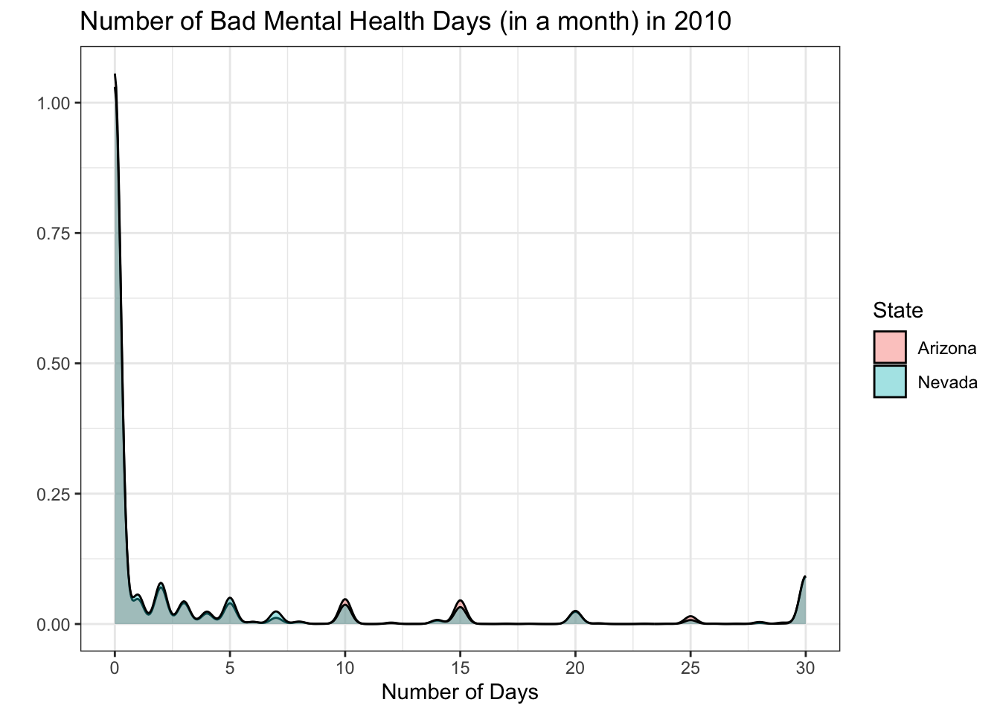
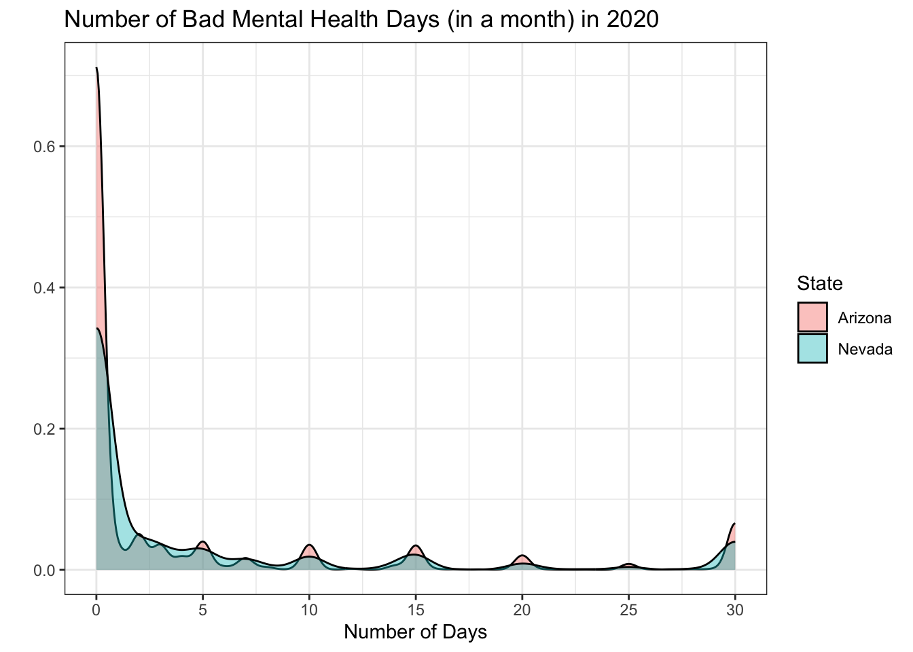
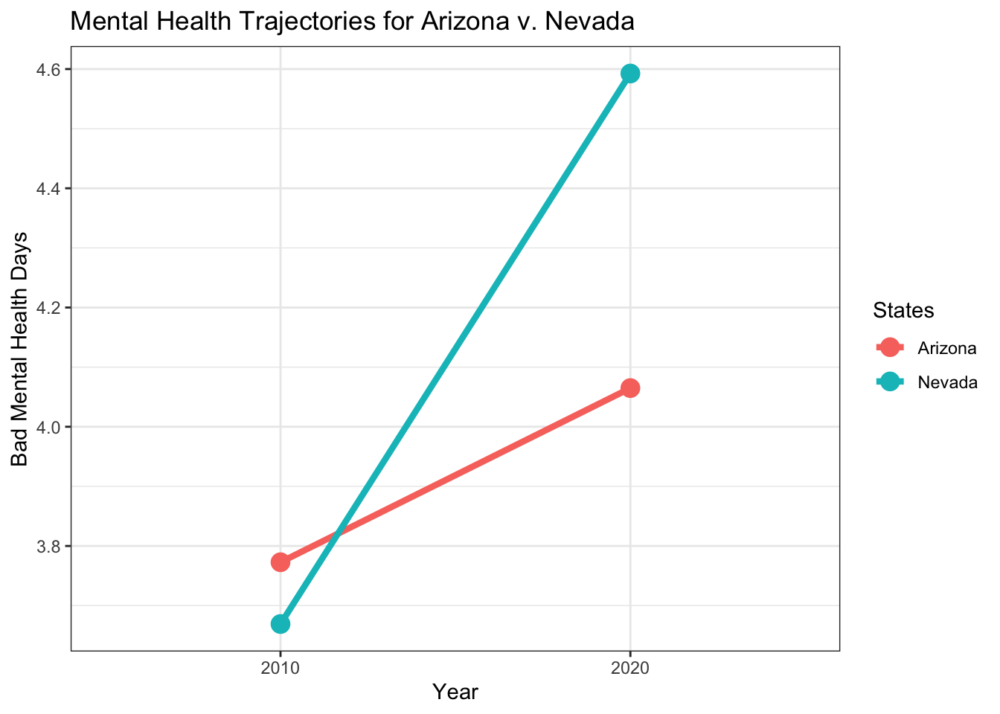

Introduction
The past several years have ushered in both excitement and dismay at the influx of both protective and anti-transgender policies at the state level. In 2020 alone, just about half of US states (e.g., 23 states) introduced anti-transgender bills that spanned aspects of transgender life, health and wellness related to exclusion from athletics, implementing barriers to health care, and policies that limit the decision-making ability for transgender youth and their families. Some other states responded to transgender needs by expanding access to health care, and codifying protections(ACLU, 2022). The political landscape between 2016 and 2020 set the stage for transgender human rights to be fought for and against in local, state, and federal policy.
To investigate the implications of policy changes on the mental health of transgender adults, this study will seek to estimate the association between pro-transgender gender identity-specific policies and the average number of bad mental health days in a 30 day period attempting suicide based on a difference-in-differences analysis using Behavioral Risk Surveillance Survey data; hypothesizing that state gender identity policies that are in favor of transgender rights and protections would be associated with reductions in the average number of bad mental health days experienced in a state.
Data and sample
Policy data was obtained from the Movement Advancement Project’s (MAP) aggregated database on LGBTQ-related polices and laws across the United States. At the state level, for each of these policies, MAP assigned a score, summed these scores, and created a “policy tally” for each state. The policies underwent an evaluation process that scored them based on their relevance to sexual orientation and gender (MAP, 2022). MAP monitors changes in the policy landscape for transgender rights at the state-level and updates maps and “snapshots” of the types of policies that are present or absent in a state, as well as shows the progression of policy change over the years. Below are the changes in the policy landscape for Arizona and Nevada between 2010 and 2020 related to gender identity
In 2010, both Arizona and Nevada had Gender Identity Tallies that were “negative” – the lowest possible score for gender identity protections given by MAP. In 2020, Arizona maintained its low score and Nevada increased to the highest possible score at “High”. Data was obtained on general mental health from the state BRFSS, a Centers for Disease Control and Prevention- supported survey that “… collects state data about U.S residents regarding their health-related risk behaviors, chronic health conditions, and use of preventative services”. Data from two states, Arizona and Nevada were used from the BRFSS Surveys from 2010 and 2020. These dates align with the state of LGBTQ policy as compiled by MAP.
The primary analysis was conducted with the full population of US adults. The analysis was focused on the full population of Arizona and Nevada respondents for the following reasons: 1) not all states collected information on gender identity and sexual orientation in 2010, this included Arizona and Nevada, 2) the full population may include individuals who are LGBTQ who may not have identified as such on the survey even if given the option. 3) the existence (or non-existence) of gender identity policies likely affect the number of individuals who self-identify as sexual or gender minorities.
Read in Behavioral Risk Factor Surveillance System data from 2010
brfss10 <- read_xpt("/Users/kierantodd/Desktop/CDBRFS10.XPT",
col_select = c(`IYEAR`,`_STATE`, `MENTHLTH`)) %>%
as.data.table() %>%
setnames(old = c("IYEAR","_STATE", "MENTHLTH"), new = c("YEAR","STATE", "MENTHLTH"))Read in Behavioral Risk Factor Surveillance System data from 2020
brfss20 <- read_xpt("/Users/kierantodd/Desktop/LLCP2020.XPT",
col_select = c(`IYEAR`,`_STATE`, `MENTHLTH`)) %>%
as.data.table() %>%
setnames(old = c("IYEAR","_STATE", "MENTHLTH"), new = c("YEAR","STATE", "MENTHLTH"))Combine BRFSS 2010 and BRFSS 2020 mental health data by State
brfss_all <- rbindlist(list(brfss10, brfss20), use.names = T)
brfss_all <- na.omit(brfss_all)Filter by Nevada and Arizona for the simple 2x2 difference-in-differences model
brfss_all <- brfss_all |>
filter(STATE %in% c("5", "32")) |>
select(STATE, YEAR, MENTHLTH) %>%
mutate(outcome = case_when(
MENTHLTH == 88 ~ 0,
MENTHLTH == 77 ~ NA_real_,
MENTHLTH == 99 ~ NA_real_,
TRUE ~ MENTHLTH))
na.omit(brfss_all)## STATE YEAR MENTHLTH outcome
## 1: 5 2010 88 0
## 2: 5 2010 88 0
## 3: 5 2010 88 0
## 4: 5 2010 88 0
## 5: 5 2010 88 0
## ---
## 15373: 32 2020 1 1
## 15374: 32 2020 88 0
## 15375: 32 2020 88 0
## 15376: 32 2020 88 0
## 15377: 32 2020 88 0Rename States by their FIPS codes to the State Abbreviations
brfss_all$STATE = ifelse(brfss_all$"STATE" == 5,"Arizona","Nevada")Further clean data so that only 2010 and 2020 interview dates exist, also omit any rows that have no values
brfss_analysis <- brfss_all %>% filter(YEAR %in% c(2010,2020))
brfss_analysis <- na.omit(brfss_analysis)Plotting a density plot of mental health bad days in the pre period
ggplot(data=brfss_analysis[brfss_analysis$YEAR==2010], aes(x=outcome, group=as.factor(STATE)))+
scale_x_continuous(breaks = seq(from = 0, to = 30, by = 5)) +
geom_density( aes( fill=as.factor(STATE) ), alpha=0.4 ) +
theme_bw() + xlab("Number of Days") +
ylab("") + guides(fill=guide_legend(title="State")) +
ggtitle("Number of Bad Mental Health Days (in a month) in 2010")
Figure 1 depicts a density plot of the number of bad mental health days in the pre-treatment period by whether or not a state eventually receives treatment (i.e., Arizona relative to Nevada). These overlaid density plots are relatively like each other in 2010.
Plotting a density plot of mental health bad days in the post period (2020)
ggplot(data=brfss_analysis[brfss_analysis$YEAR==2020], aes(x=outcome, group=as.factor(STATE)))+
scale_x_continuous(breaks = seq(from = 0, to = 30, by = 5)) +
geom_density( aes( fill=as.factor(STATE) ), alpha=0.4 ) +
theme_bw() + xlab("Number of Days") +
ylab("") + guides(fill=guide_legend(title="State")) +
ggtitle("Number of Bad Mental Health Days (in a month) in 2020")
Figure 2 depicts the density of the outcome in the post-treatment period again disaggregated by treatment status. The plots differ more from each other in 2020 than they did in 2010.
Creating a plot to average mental health outcome between 2010 and 2020
agg <- ddply(brfss_analysis,.(YEAR, STATE),summarize, val = mean(outcome))
ggplot( data=agg, aes(x=as.factor(YEAR), y=val, group=STATE,
color=as.factor(STATE))) +
geom_line(lwd=1.5)+
theme_bw() + geom_point(size=4) +
ylab("Bad Mental Health Days") + xlab("Year") +
guides(color=guide_legend(title="States")) +
ggtitle("Mental Health Trajectories for Arizona v. Nevada")## Warning: Using `size` aesthetic for lines was deprecated in ggplot2 3.4.0.
## ℹ Please use `linewidth` instead.